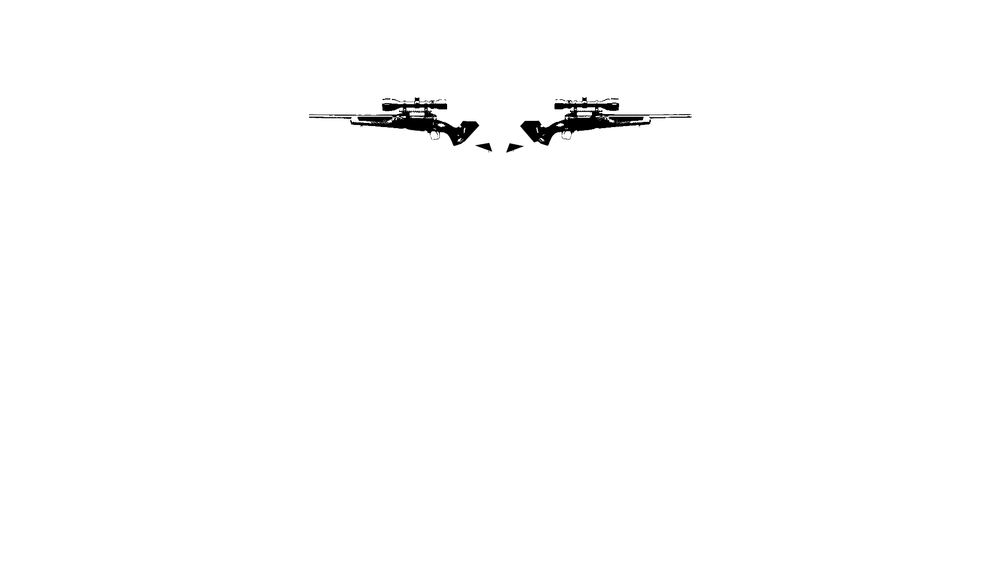
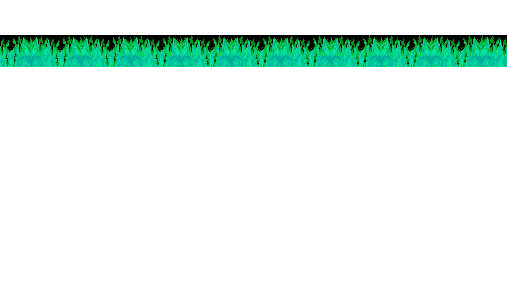

About Me


I'm a senior finishing up my last semester at the University of Colorado Boulder, where I'm finishing my degree in Media Production with minors in German Studies and Creative Technology and Design. Alongside my studies, I also work as an Audio Visual Technician at the Glenn Miller Ballroom in the University Memorial Center, where I support live events utilizing sound and lighting systems.
Outside of my classes and work, I create abstract digital art, edit videos, broadcast music mixes on Radio 1190, plan underground music events, as well as attending DIY music events locally.
Post-grad I will be focusing on my digital art, post-production and event curation in the Denver metro.
Artwork
